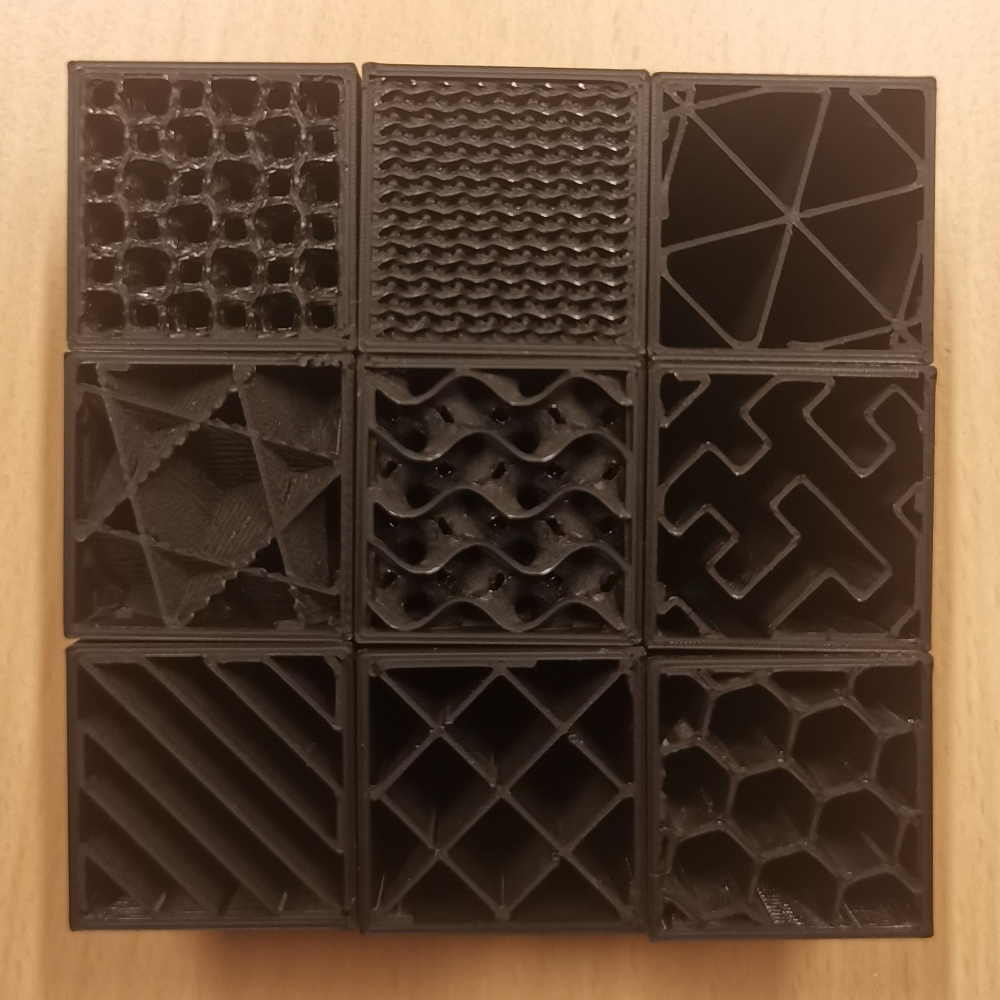
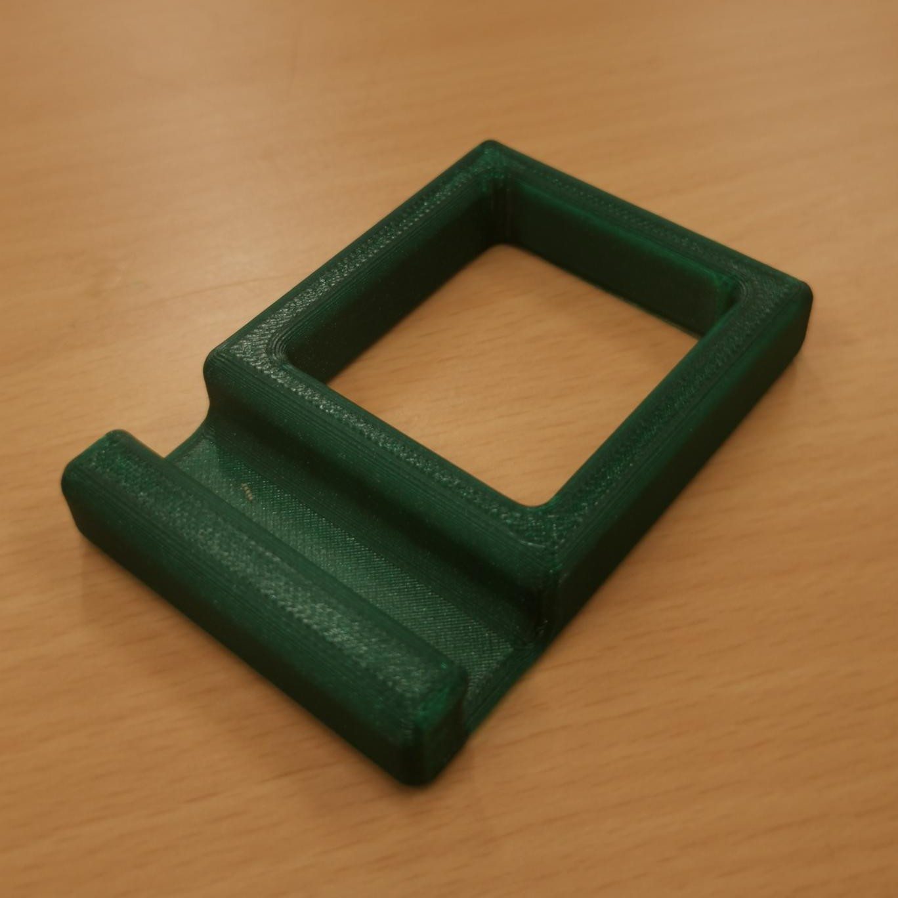

3D-Printing
Instruction Manual Original Prusa MK4
During our course, we learned about the broad field of additive manufacturing, where objects are created layer by layer from digital designs. Additive manufacturing includes several different technologies, such as Fused Deposition Modeling (FDM), Stereolithography (SLA), and various powder fusion systems like Selective Laser Sintering (SLS). Each process offers unique advantages for parts with specific requirements — for example, FDM is popular for its accessibility and ability to print thermoplastic filaments, while SLA achieves high detail using liquid resin, and powder fusion systems like SLS or MJF are strong choices for producing functional components from powdered plastic or even metals.
Materials used in additive manufacturing are equally diverse, ranging from common plastics such as PLA and ABS, to photopolymer resins used in SLA printers, and specialized metals or ceramics for powder-based processes.
We focused particularly on FDM technology, which works by extruding melted thermoplastic filament through a heated nozzle. The nozzle deposits the material layer by layer onto the print bed, where it cools and solidifies to build the final object. This process allows for flexible design options, relatively low cost, and easy access to a wide range of materials. However, FDM parts may exhibit visible layer lines and require support structures for overhangs or complex geometries. Key parameters such as print temperature, layer height, print speed, and infill density strongly impact the strength, surface finish, and print time of the parts.
Crucial to any 3D printing project is the design phase. We used Fusion 360, a powerful CAD program, to model our first part: a simple phone stand. Fusion 360 offers intuitive tools to visualize, adjust, and prepare parts for printing, matching real-world measurements and constraints. After designing, we printed our phone stand using an FDM printer from Prusa, which allowed us to experience firsthand how design translates into physical form and experiment with settings to improve print quality and durability.
